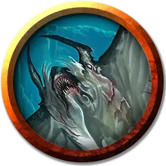

Икситксачитл клирик
Ixitxachitl Cleric
Маленькая Аберрация, хаотично-злая

Класс Доспеха 15 (природный доспех)
Хиты 18 (4к6 + 4)
Скорость 0 футов, плавая 30 футов
| мод | спас | ||
|---|---|---|---|
| СИЛ | 12 | +1 | +1 |
| ЛОВ | 16 | +3 | +3 |
| ТЕЛ | 13 | +1 | +1 |
| мод | спас | ||
|---|---|---|---|
| ИНТ | 12 | +1 | +1 |
| МДР | 13 | +1 | +1 |
| ХАР | 7 | −2 | −2 |
Чувства тёмное зрение 60 футов, пассивное Восприятие 11
Языки Бездны, Язык Икситксачитлов
Опасность 1/4 (50 опыта)
Бонус мастерства +2
Особенности
Использование заклинаний. Икситксачитл является заклинателем 5-го уровня, его базовой характеристикой является Мудрость (Сл спасброска от заклинаний 11, +3 к попаданию заклинательными атаками). У икситксачитла подготовлены следующие заклинания жреца:
• Заговоры (неограниченно): указание [guidance], чудотворство [thaumaturgy];
• 1 уровень (4 ячейки): очарование личности [charm person], сотворение или уничтожение воды [create or destroy water];
• 2 уровень (3 ячейки): удержание личности [hold person], тишина [silence];
• 3 уровень (2 ячейки): рассеивание магии [dispel magic], языки [tongues].
Действия
Укус. Рукопашная атака оружием: +3 к попаданию, досягае- мость 5 фт., одна цель. Попадание: Колющий урон 4 (1к6 + 1).
Реакции
Хвост с шипами. Когда существо вызывает провоцированную атаку икситксачитла, этот икситксачитл может совершить следующую атаку вместо укуса. Рукопашная атака оружием: +5 к попаданию, досягаемость 5 футов., одна цель. Попадание: Колющий урон 7 (1к8 + 3).
Описание
Икситксачитлы – водные существа, напоминающие скатов, с маленькими когтистыми лапками на концах своих «крыльев», а также чёрными глазами, выражающими зловещую разумность. Многие существа путают икситксачитлов с обычными скатами, но это может стать для них смертельной ошибкой. Икситксачитлы настолько же злые, насколько и хитрые, и оправдывают свое прозвище – «демоноскаты». Они живут как в пресной, так и в соленой воде, но кроме их злой природы о них мало что известно.
Борьба за выживание. Икситксачитлы вылупляются из яиц крошечными существами, и в ширину лишь немногим больше кисти руки. И с этого момента они растут до конца своей жизни, стараясь выжить любой ценой. Те икситксачитлы, которым удается постичь секреты выживания, заполучают силы регенерации и питаются жизненными силами других существ.
Всепоглощение. Икситксачитлы опустошают коралловые рифы или другие природные подводные образования для создания лабиринтов-логовищ, часто используя для этого различных подводных жителей, порабощенных ими. Они обычно полностью опустошают область, прежде чем перейти в новые плодородные края, таким образом оставляя заброшенные логова. Косяки икситксачитлов часто нападают на других водных существ, чтобы завоевывать богатые пищей территории.
Демонопоклонники. Икситксачитлы поклоняются различным демонам и служат им, в особенности Демогоргону, которого они воспринимают как своего покровителя и создателя. Они пребывают в непримиримом соперничестве с мерроу, являющимися самыми величайшими и излюбленными слугами Принца Демонов.